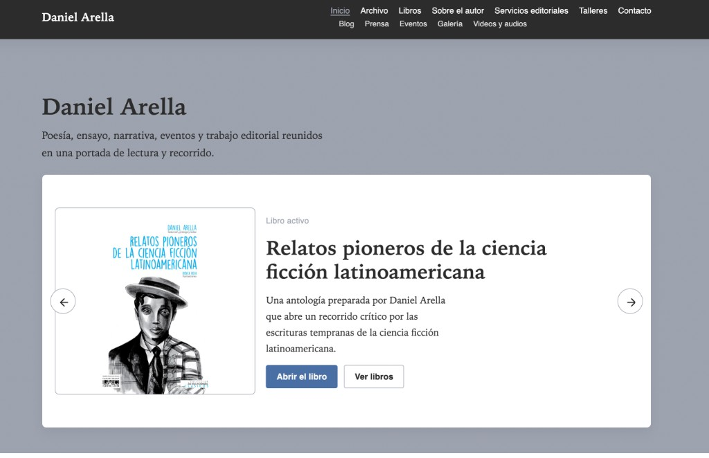
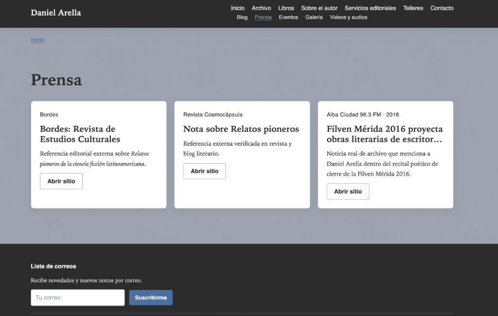

Desde el inframundo del lenguaje
Mención honrosa en el I Premio de Ensayo sobre la obra de Ida Gramcko.
Guía de color y elementos — Sitio Daniel Arella
Documento generado a partir de 02-identidad-corporativa y assets/css/settings.css
Solo existen cinco colores reales. Todo el sitio (fondos, texto, bordes, sombras, hover) proviene de esta paleta.
Estos elementos usan las clases reales del proyecto (assets/css/main.css).
Texto con enlace en Siena y hover en Musgo.
Selección editorial
Texto sobre superficie Terracota. Las tarjetas y secciones alternan con fondo Pergamino.
Mención honrosa en el I Premio de Ensayo sobre la obra de Ida Gramcko.
Breadcrumbs, intro de archivo, filtros, formularios, filas de listado, panel de cita, hero, pie y contenido de página.
Artículos y notas
Reflexiones, ensayos breves y notas sobre literatura, ciencia ficción y edición.
Poema disponible en la selección de Archivo Venezuela 2024.
Biblioteca de autor
Poesía, ensayo, narrativa, eventos y trabajo editorial reunidos en una portada de lectura y recorrido.

Selección y prólogo de Daniel Arella.
Archivo
El sitio reúne libros, poemas, artículos, eventos y prensa externa.
Derechos
Los textos, imágenes y materiales editoriales de este sitio son propiedad de Daniel Arella. La reproducción o circulación requiere autorización previa.
Capturas de distintas partes del home (index.html) que muestran la aplicación de la paleta: cabecera, hero, sección Prensa, bloque «La obra como biblioteca» y pie.

